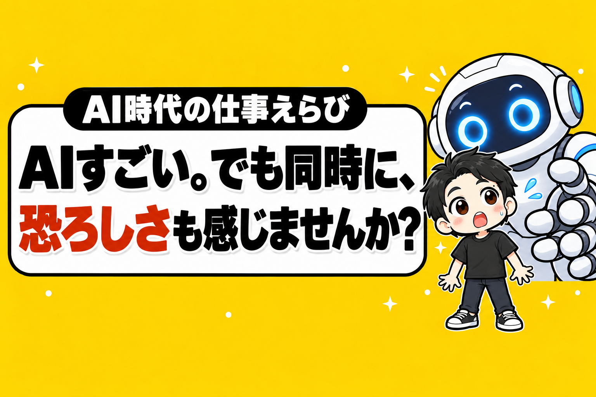

AIがすごい。
でも同時に、恐ろしさも感じませんか?
どんどん、人間の仕事がAIに変わっています。
あなたの仕事は、どうですか?
結論から言うと、AIに仕事を取られる側ではなく、AIで仕事がラクになる側に、いまのうちに回ることです。
この記事では、そのために選ぶべき仕事の3つの条件と、その1つとしてぼくがやっているレンタルスペース(時間で貸す部屋)の話を書きます。
1. 人間の仕事が、どんどんAIに変わっている
AIの進化で、人がやっていた仕事がAIに移っています。
例えば、こんな仕事です。
電話の受付。
文章を書く、翻訳する。
エクセルの集計や、会議の資料づくり。
広告の運用。
簡単なHPやアプリづくり。
ぼくの店でも、お客さんからの電話はAIが受けています。
価格設定も、売上の集計も、AIです。
数えてみたら、AIに任せている仕事は171件ありました。
出典: ぼくがAIに書き出してもらった「AIに任せている仕事」の一覧(2026年10月7日)。お店の運営の部分の、はじめの14行です
前なら、人を雇ってやってもらっていた仕事です。
あなたの仕事は、この中に入っていませんか?
入っていなくても、近い仕事をしていませんか?
2. いま考えている人だけが、この先も飯を食える
多くの人の仕事は、AIに変わっていきます。
そのなかで、どういう仕事をすべきか。
いや、しなければならないか。
せざるをえないか。
いまのうちから考えている人が、この先、数十年飯を食えると思います。
考えない人は、本当にどうなるのだろう。
それが一家の大黒柱の人だったら。
本当に悲惨なことになると思います。
給料が止まっても、家賃も、子どもの学費も止まりません。
AIに仕事が変わってから考えはじめるのでは、間にあわないかもしれない。
だから、いまです。
3. 選ぶべき仕事の、3つの条件
じゃあ、どういう仕事をすべきか。
いや、しなければならないか。
ぼくは、この3つの条件で考えています。
1つ目。AIには代われない「物理」があること。
場所、モノ、人が実際に来ること。
AIは画面の中では何でもできますが、部屋を持つことも、部屋に来ることもできません。
2つ目。AIを使うほど、ラクになること。
AIに仕事を取られる側ではなく、AIに手伝ってもらう側に立つ。
AIが進化するほど、自分の仕事が減ってラクになる仕事です。
3つ目。会社員のまま、小さく始められること。
いきなり会社を辞めると、それこそ家族ごとあぶない。
給料をもらいながら、小さく試せることが大事です。
4. その1つが、レンタルスペース
この3つにぴったりはまるのが、レンタルスペースです。
部屋は、物理です。
ダンスの練習をするのも、集まるのも、人間です。
AIが代わりに部屋へ来ることはありません。
運営は、AIに任せられます。
ぼくの店では、電話番、価格設定、売上の集計まで、AIとAIで作った仕組みがやっています。
清掃は外注さん。
ぼくの仕事は、1店舗あたり1日数分です。
AIが進化するほど、ぼくの仕事は減っていく。
会社員の仕事とは、向きが逆です。
そして、1部屋から始められます。
会社員のままでもできます。
※AIをどこまで任せるかは、予約サイトなどの規約を確かめたうえで、自己責任でお願いします。AIでの自動操作が規約で制限されていることもあります。
ぼくも、会社員のまま1部屋目を出しました
少しだけ自己紹介を。
ぼくは大学を出てから、製薬会社でサラリーマンをしていました。
37歳のとき、90万円でレンタルスペースを始めました。
融資はゼロ、貯金だけです。
7ヶ月で回収して、5年たったいまも、毎月15万円ほど残っています。
そこから会社員のまま部屋を増やして、40歳で会社を辞めました。
これまでに23店舗、売上は累計1.5億円を超えました。
いきなり独立したわけではありません。
給料という土台の上で、1部屋ずつ積んだだけです。
AIをこわがるより、AIで回る仕事を持つ
まとめます。
- AIには代われない「物理」がある
- AIを使うほど、ラクになる
- 会社員のまま、小さく始められる
この3つがそろう仕事を、いまのうちに1つ持つ。
その1つとして、ぼくはレンタルスペースをおすすめします。
AIをこわがるより、AIを使う。
AIに代われない場所を持つ。
給料があるうちに、1部屋目を出す。
あなたは、いまのうちに何を考えておきますか?
1部屋目で黒字にするには、1日何時間の予約が必要か。
無料の診断で、30秒で出せます。
診断のあとに、ぼくが物件を決めるときの順番を1日1通ずつ届けるメール講座(全8通)も受け取れます。

物件探しから、月いくら残るかの計算、出店、撤退まで。23店舗の数字といっしょに、教科書にぜんぶ書いています。
レンタルスペース経営の教科書

販売価格は3部売れるごとに2,000円ずつ値上がりします（上限あり）。内容・最新価格は販売ページをご確認ください。
▼もう1つの副業、AI社員だけのeBay輸出店の実録🐹

▼ブログ(レンスペ×eBay、全記事まとめ)